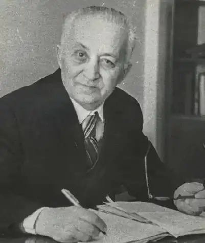
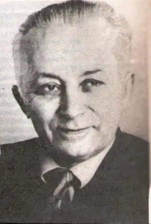

Юсуф Болат — письменник, драматург. Народився 16 березня 1909 р. в Алушті в сім’ї незаможних селян. Після 1924 року вступив до Ялтинського педагогічного технікуму, а 1930 року педагогічного інституту.
Перше оповідання Юсуфа Болата "Чанълар къакъылгъанда" Коли дунали дзвони") опубліковане 1929 року. Автор багатьох п’єс, що користувалися великим успіхом: "Яшамакъ истейим" ("Хочу жити"), "Сонъки гедже" ("Остання ніч"), "Той девам эте" ("Весілля триває"), "Алім", "Арзы къыз" ("Дівчина Арзи").
1936 року Юсуф Болат став відповідальним секретарем Cпілки письменників Кримської АРСР, з 1939 року редактором журналу "Совет эдебияты" ("Радянська література"), 1942 року — редактором газети "Къызыл Къырым" ("Червоний Крим"). Працював також відповідальним редактором Всесоюзного радіо – у відділі мовлення для населення окупованих нацистами територій. 3 1944 року Юсуф Болат перебував у депортації у Самаркандській області. Спершу вчителював, а з 1960 року мешкав у Ташкенті — поєднував журналістику й літературну творчість, працюючи редактором газети "Ленин байрагъы" ("Ленінський стяг"). Окрім серйозних жанрів — повісті, романи, п'єси — писав гумористичні оповідання, займався літературознавчими дослідженнями. Юсуф Болат входив до ініціативної групи кримськотатарської інтелігенції (Веліулла Муртазаєв, Рефат Мустафаєв, Мустафа Селімов, Шаміль Алядін), що сформувалася наприкінці 1950-х років та обговорювала незаконне виселення кримськотатарського народу, й доводила справедливість вимог повернення на Батьківщину. Але сам письменник повернутися не встиг — помер у Ташкенті 1986 року. Юсуф Болат був дядьком Шаміля Алядіна.